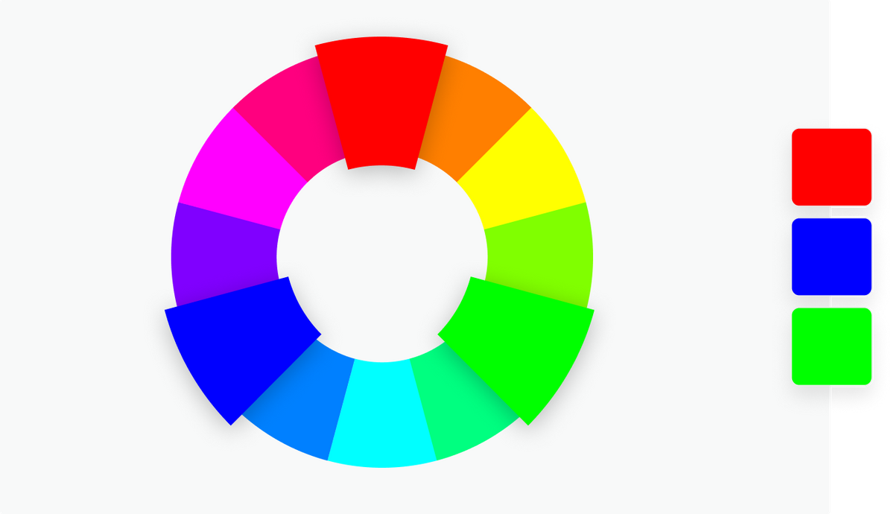

Som multimediedesigner er det super vigtigt at vide, hvad farve teori er, og hvordan vi bruger farver i vores design. Farver betyder nogle bestemte ting, og mennesker forholder sig forskelligt til bestemte farver. Farver kan føre opmærksomheden hen på noget bestemt, om så det er produkt, service, butik osv.
Farver har forskellige betydninger for alle mennesker, og det kan variere fra person til person - det kan være baseret på deres køn, opvækst, kultur osv. En vigtig pointe at påpege at farvesystemer kan have forskellige meninger imellem forskellige kulturer.
Hvordan farvesymbolik fungere ift. webdesign.
Farver er sådan set bare lys. I 1600-tallet påviste Isaac Newton lysets brydning gennem en prisme. Hans eksperimenter fik ham til at konkludere, at blå, gul og rød var de primære farver, da disse farver ikke kunne blandes af andre farver. Senere hen 1900-tallet udviedet Johannes Itten Isaac's teori med den farvecirkle vi kender og bruger i dag. Han delte farve op på den måde at de sekundære farver var blandet af to primære farver. Yderst i farvecirklen placerede han de tertiære farver, som var farver blandet af en primær og en sekundær farve. Farver som stod overfor hinanden, defineredes som komplementære, og skabte en optisk kontrast.
Farvesystemer er et vigtigt kendskab at have når man er multimediedesigner - fordi man skal kunne skelne mellem digital grafik og tryksager. Der er 3 farvesystemer som man skal kende til:
RGB - RGB står for Red Green Blue. Man kalder dette for et additiv farvesystem som betyder at man tilføjer lys. dette bruger man til digital grafik.
CMYK - CMYK står for Cyan Magenta Yellow Key(black) som er et subtraktivt farvesystem, som modsat additiv her fjener man lys. dette bruges til tryksager
HSB - HSB står for Hue saturation Brightness. Hue er varition af en farve hvor saturation er med til at bestemme hvor meget gråtone der kommer frem i farven. Brightness betyder at hvor meget lys/mørke man blander i en farve.
(Farvelære.pdf)
Når det er man skal arbejde med farver så har man to metoder at kunne arbejde sig ud fra: Analog og triader
Monokrom består af en enkelt farve som justeres ift. ens brightness og saturation
Komplementær farver er farverne der ligger direkte overfor hinanden

Her er tre farve som har denne samme afstand fra hinanden
(https://www.canva.com/colors/color-wheel/)